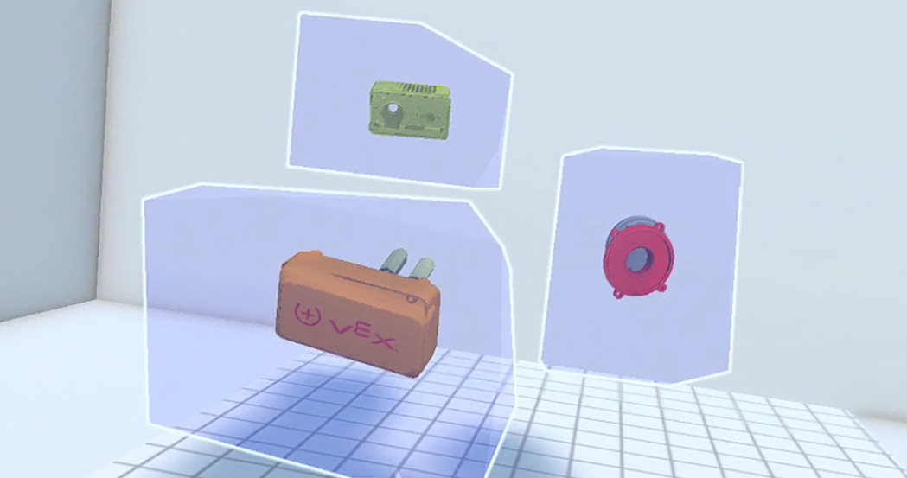

IEEE ISMAR 2025 · Adjunct · 2025
Virtual Reality Task Guidance Through Relative 6DoF Pose Specification

BibTeX
@inproceedings{yang2025taskguidance,
title={Virtual Reality Task Guidance Through Relative 6DoF Pose Specification},
author={Yang, Ben and He, Xichen and Zou, Charlie and Liu, Jen-Shuo and Tversky, Barbara and Feiner, Steven},
booktitle={2025 IEEE International Symposium on Mixed and Augmented Reality Adjunct (ISMAR-Adjunct)},
year={2025},
doi={10.1109/ISMAR-ADJUNCT68609.2025.00247}
}